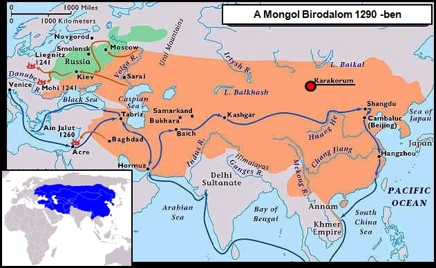

Őaz első mongol nagykán (császár), a világtörténelem egyik legnagyobb hódítója.
Dzsingisz egyesítette a mongol törzseket és megalapította a Mongol Birodalmat. Ő és utódai elfoglalták Eurázsia nagy részét,
beleértve Kínát, Oroszországot, Perzsiát és Kelet-Európát is. Nyugaton Magyarországig jutottak, a Közel-Keleten csak az
egyiptomiaknak sikerült megállítaniuk csapataikat. Ez volt a világtörténelem legnagyobb összefüggő területű birodalma.
Dzsingisz kán volt Kubiláj kán,
a Jüan-dinasztia alapítójának és első császárának nagyapja.
Terjeszkedése
A hagyományos nomád hadrendet átültette a civil lakosság felosztásába is, a lakosság, akárcsak a
hadsereg 10-es, 100-as és
1000-es, 10 000-es
csoportokra volt osztva, 10 000 ember alkotott egy tüment. A hadsereg a családot és lovakat is
magával vitte, minden lovasnak
3 vagy 4 lova volt, így a pihent ló mindig rendelkezésre állt.
Dzsingisz kán egyik fő célja volt a Kína északi területét uraló dzsürcsi Csin-dinasztia és a mai Kanszu és Ordosz területén
álló tangut
Hszi Hszia (Nyugati-Hszia) állam meghódítása. Miután 1205 és 1209 között több hadjáratban vazallusává
tette a
Hszi Hszia birodalmat, 1211-től kezdve rendszeres támadásokat intézett a dzsürcsik ellen, egyre nagyobb
területeket
hódítva meg. A tangutok és dzsürcsik elleni hadjáratok során kerültek szembe a mongolok a nomádok
számára szokatlan
erődítmények elfoglalásának problémájával, s a szökött és szolgálatába szegődött kínai mérnökök
segítségével olyan
haditechnikákat fejlesztettek ki, amelyek a korban a legjobbaknak számítottak.
A Mongol Birodalom Dzsingisz kán utódai idején

1213-ra már a kínai nagy falig jutott.
Ezt megkerülve legyőzte a dzsürcsi seregeket,
feldúlta Észak-Kínát, elfoglalta a legtöbb nagyvárost,
és 1215-ben elfoglalta a fővárost, Jancsinget is. A császár látszólag megadta magát,
udvartartásával délre, Kajfengbe menekült, Dzsingisz megkímélte életét, azzal a feltétellel,
hogy miután ő elhagyja a tangut területet, a császár nem tér vissza. Dzsingisz alighogy kitette
a lábát a Csin területéről, a császár visszatért, és elkergette az otthagyott mongol helyőrséget.
Dzsingisz ekkor már nyugat felé indult Hvárezm meghódítására és a közbeeső Kara-kitaj Birodalom
leigázására.
1218-ra a Mongol Birodalom határa
elérte a Hvárezmi Birodalom iszlám állam határait
(a Kaszpi-tenger mellett) nyugaton, valamint a Perzsa-öblöt
és az Arab tengert délen.
1218-ban Dzsingisz kán kereskedőkaravánt, majd követeket küldött Hvárezmbe, azonban Otrarban a
helyőrség vezetője lemészároltatta a követséget, mire Dzsingisz 200 000 emberrel megtámadta Hvárezmet.
1220-ra Hvárezm mongol fennhatóság alá került, így a selyemút valamint az észak-dél irányú "Prém-út" is
mongol ellenőrzés alá került.
Hvárezm meghódítása után kisebb csapatokat küldött Indiába. A mongolok egészen Delhiig jutottak, de tartós eredmény nem értek el
és az indiai népek elleni
harcok még halála után egy évszázadig tartottak.